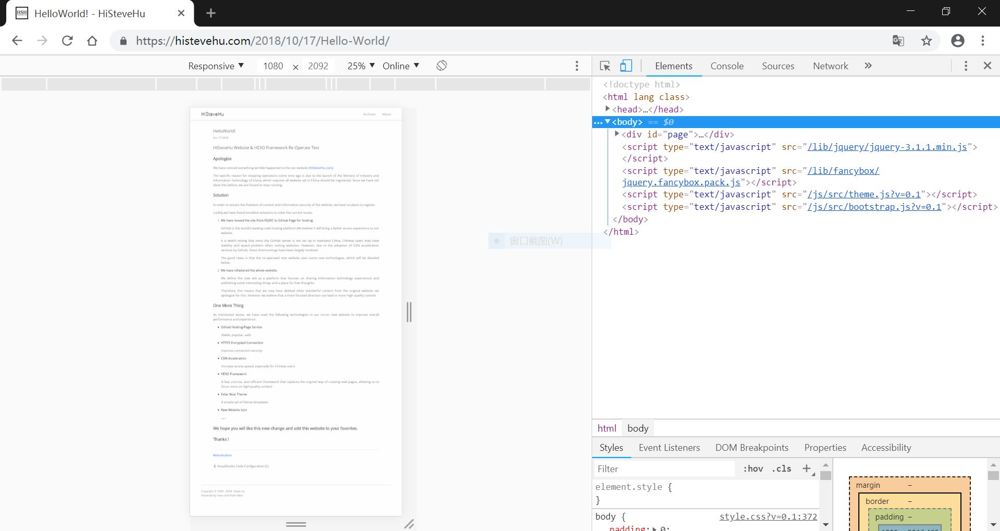
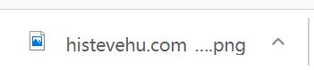

How To: Screenshot the Full Page with Google Chrome Native Feature
Introduction
There are many ways to take screenshots of web pages. Use the screenshot software that comes with the system or Chrome extensions. Here, We’d like to share a more convenient and more advanced method.
Compared with other methods,it:
- Just need the Chrome, don’t need other Chrome extensions.
- From rendering output, better shot quality
Steps
When browsing a long web page, press F12 to enter the Chrome Developer Mode.

Press Shift+Ctrl+P to open the command textbox, enter the command:
1
Capture full size screenshot
Then Enter

Chrome will save the screenshot automatically.
